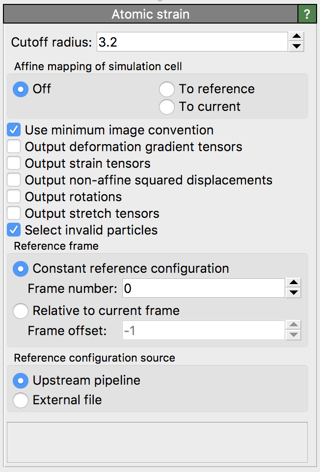
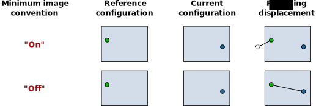

Atomic strain
{kind=link}
This modifier calculates the atomic-level deformation gradient and the strain tensor at each particle from the relative motion of its neighbors. The two per-particle tensors represent versions of the corresponding continuum kinematic quantities obtained from averaging the discrete particle displacements over finite volumes around each particle.
The deformation calculation is based on two input particle configurations: the reference (or initial) configuration and the current (or deformed) configuration. In other words, the local deformation is calculated with respect to some explicitly specified initial arrangement of the input particles. The modifier always considers the currently loaded particle positions as the current configuration. The reference particle positions are by default taken from frame 0 of the same animation sequence. Alternatively, the modifier supports loading the reference particle positions from a separate data file.
Conceptually, the calculation of various micromechanical quantities happens in several steps:
First, the particle displacement vectors \({\mathbf{u}_i}\) are calculated from the particle positions in the initial and the final configuration.
Based on this information, the atomic deformation gradient tensor \(\mathbf{F}\) is calculated for each particle.
Based on \(\mathbf{F}\), the atomic Green-Lagrangian strain tensor \(\mathbf{E} = 1/2 (\mathbf{F}^{\mathrm{T}} \mathbf{F} - \mathbf{I})\) is derived for each particle.
Based on \(\mathbf{E}\), the von Mises local shear invariant and the hydrostatic strain measure are calculated.
Additionally, a polar decomposition of the atomic deformation gradient \(\mathbf{F}\) yields a local rotation tensor \(\mathbf{R}\) and a stretch tensor \(\mathbf{U}\).
Furthermore, a quantity knows as \(D_{\mathrm{min}}^2\) may be calculated from the particle displacements and the deformation gradient \(\mathbf{F}\), which is a measure for the non-affine part of the local deformation.
The modifier outputs these micromechanical quantities as new particle properties. You can use the Color coding modifier, for example, to visualize the values of these properties in OVITO or look at specific particles using the Data Inspector. Note that the displacements are only intermediate calculation results which are not output by the modifier. If you need them, please use the Displacement vectors modifier.
Role of the cutoff radius
The Cutoff radius is a parameter of the modifier controlling the range of neighbors taken into account when computing the atomic deformation gradient tensor for a particle. In other words this parameter determines the size of a spherical volume around the particle over which the relative motion of neighboring particles is averaged to obtain the continuum deformation measure. As a rule of thumb: Use a smaller cutoff radius parameter to resolve all local details of the deformation field. On the other hand, a large cutoff radius will yield slowly varying (smooth) deformation values at the atomic sites.
A typical choice for the cutoff radius parameter is to use the first minimum of the pair distribution function, i.e. placing the cutoff halfway between the first and the second shell of neighbors in the system at hand. You can calculate the pair distribution function for the current system using OVITO’s Coordination analysis modifier.
Since the deformation gradient at each site is calculated from the relative motion of neighboring particles, it is important to ensure that sufficient neighbors are within the given cutoff range (in the undeformed configuration). This puts a lower limit on the cutoff radius that you can safely use. For three-dimensional systems, OVITO requires at a minimum three neighbors within the cutoff range of the central particle in order to calculate a deformation gradient tensor. Furthermore, these three neighbors must not be co-planar. If the cutoff radius has been chosen too small and there are less than three neighbors within range of the central particle, the deformation gradient calculation and all subsequent calculations will fail for the particle. The modifier will notify you about this situation in the status field and will, for diagnostic purposes, select all such “undercoordinated” particles for which the calculation failed. Depending on the situation, you may react to this kind of condition by bumping up the cutoff radius parameter in order for more neighbors to be included in the cutoff sphere.
Two-dimensional systems
Depending on the selected dimensionality of the input simulation cell, the atomic strain calculation is either performed in 2D or 3D mode. In 3D mode, all 9 components of the atomic deformation gradient tensor are calculated from the relative motion vectors of neighboring particles using a least-squares fit. In 2D mode, only 4 independent components are calculated:
3D mode: |
2D mode: |
\[\begin{split}\mathbf{F} = \begin{pmatrix}
F_{\mathrm{xx}} & F_{\mathrm{xy}} & F_{\mathrm{xz}} \\
F_{\mathrm{yx}} & F_{\mathrm{yy}} & F_{\mathrm{yz}} \\
F_{\mathrm{zx}} & F_{\mathrm{zy}} & F_{\mathrm{zz}}
\end{pmatrix}\end{split}\]
|
\[\begin{split}\mathbf{F} = \begin{pmatrix}
F_{\mathrm{xx}} & F_{\mathrm{xy}} & 0 \\
F_{\mathrm{yx}} & F_{\mathrm{yy}} & 0 \\
0 & 0 & 1
\end{pmatrix}\end{split}\]
|
More on the micromechanical quantities
The atomic strain calculation in OVITO is based on finite-strain theory. Accordingly, strain is measured using the
Green-Lagrangian strain tensor
\(\mathbf{E} = 1/2 (\mathbf{F}^{\mathrm{T}} \mathbf{F} - \mathbf{I})\).
On the basis of this symmetric strain tensor, the modifier also calculates the von Mises local shear invariant and the
volumetric (hydrostatic) part of the strain tensor and outputs these scalar quantities as particle properties named
Shear Strain and Volumetric Strain, respectively. The former is a good measure for shear deformations
along arbitrary directions.
3D mode: |
2D mode: |
|
|---|---|---|
Shear strain: |
\[\begin{split}[ E_{\mathrm{xy}}^2 + & E_{\mathrm{xz}}^2 + E_{\mathrm{yz}}^2 + 1/6 (\\
& (E_{\mathrm{xx}} - E_{\mathrm{yy}})^2 + (E_{\mathrm{xx}} - E_{\mathrm{zz}})^2 + (E_{\mathrm{yy}} - E_{\mathrm{zz}})^2)]^{1/2}\end{split}\]
|
\([ E_{\mathrm{xy}}^2 + 1/2 (E_{\mathrm{xx}} - E_{\mathrm{yy}})^2]^{1/2}\) |
Volumetric strain: |
\((E_{\mathrm{xx}} + E_{\mathrm{yy}} + E_{\mathrm{zz}}) / 3\) |
\((E_{\mathrm{xx}} + E_{\mathrm{yy}}) / 2\) |
The deformation gradient and the strain tensor both can only describe material deformations that are locally affine. In fact, the atomic deformation gradient tensor is computed such that it best describes only the affine component of the true deformation, which may actually be non-affine within the spherical sampling volumes. Falk & Langer (see reference below) have proposed a measure to quantify the deviation of the true deformation from the affine approximation that the atomic deformation gradient represents. This measure, the non-affine squared displacement (\(D_{\mathrm{min}}^2\)), is basically the residual of the least-squares fit through which the deformation gradient is calculated. It may be used as a diagnostic for identifying local irreversible shear transformations in amorphous solids, for example.
When calculating \(D_{\mathrm{min}}^2\), OVITO follows the original formulation given by Falk and Langer, which consists of summing up the squared differences between the actual displacements of neighbors and the computed affine approximation. In the current implementation, this sum does not get divided by the number of neighbors within the cutoff range. Thus, the calculated \(D_{\mathrm{min}}^2\) value for a particle is not normalized and will depend on the number of neighbors that are included in the selected cutoff volume. That means \(D_{\mathrm{min}}^2\) values will naturally increase if you increase the cutoff radius.
The atomic deformation gradient \(\mathbf{F}\) can be decomposed into the product \(\mathbf{F} = \mathbf{R} \cdot \mathbf{U}\)
with \(\mathbf{R}\) being the rigid-body rotation tensor and \(\mathbf{U}\) the right stretch tensor.
\(\mathbf{U}\) is symmetric positive definite. In OVITO the local rotation \(\mathbf{R}\) is encoded
as a quaternion \(\mathbf{R} = (R_{\mathrm{x}}, R_{\mathrm{y}}, R_{\mathrm{z}}, R_{\mathrm{w}})\) and is output by the modifier
as the particle property named Rotation. From this, the angle of rotation (in radians) for each particle can subsequently be
obtained as theta = 2 * acos(Rotation.W) using OVITO’s Compute property modifier.
Reference configuration
By default, the modifier obtains the reference particle positions from the currently loaded simulation sequence by evaluating the data pipeline at animation time 0. This default mode is denoted as Constant reference configuration in the user interface. If desired, OVITO allows you to pick an animation frame other than 0 as reference.
Alternatively, you can let OVITO calculate incremental deformation quantities using the option Relative to current frame. In this mode, a sliding reference configuration is used, based on a relative time offset with respect to the current configuration. Negative offsets correspond to a reference configuration preceding the current configuration in time. An offset of -1, for example, lets OVITO use the animation frame immediately preceding the current frame as reference. Note that, in this case, deformation quantities cannot be calculated at frame 0, because there is no preceding frame.
If you want to load the reference particle positions from a separate file instead of taking them from the currently loaded dataset, you can select the data source option External file. Activating this option will show an additional panel (Reference: External file) allowing you to pick the file containing the undeformed particle positions.
Particle identities
In order to calculate the displacement vectors that enter in the deformation gradient calculation, OVITO needs to build a one-to-one mapping between the particles in the undeformed
and the deformed configuration. If the particles possess a property named Particle Identifier,
then OVITO will use this identity information to generate the mapping. In such a case, it is okay if the storage order of particles
in the input file(s) changes with time. However, if particles do not possess unique identifiers, then the modifier requires that
the reference configuration contains exactly the same number of particles as the current configuration
and it assumes that they are stored in the same order. This assumption is not always true as some simulation
codes reorder particles during a simulation run for performance reasons. If you forget to dump the particle IDs or atom IDs
in addition to the positions during a simulation, you should be aware that OVITO may compute wrong displacement vectors because of
an invalid default particle mapping. You can use the Data Inspector
to check for the presence of the Particle Identifier property after file import.
Affine mapping of the simulation cell
Note: This option applies to systems with periodic boundary conditions. For non-periodic systems (and typically also for systems with mixed boundary conditions) it should remain turned off.
The setting Affine mapping controls how OVITO treats situations in which the shape or volume of the periodic simulation cell changes from the initial to the deformed configuration. Such a cell change typically occurs in simulations due to straining or pressure/stress relaxation. Because the calculation of displacement vectors is ambiguous in such situations, the affine mapping option lets you control the precise calculation method.
If affine mapping is turned off (the default), atomic displacements are calculated simply by subtracting the initial particle position from the current position. Any change of the simulation cell geometry is ignored.
The mode To reference performs a remapping of the current particle positions into the reference simulation cell before calculating the displacement vectors. For that, OVITO first computes an affine transformation from the current and the reference simulation cell geometry and applies it to the particle coordinates. This mode may be used to effectively filter out contributions to the atomic strain that stem from the uniform deformation of the simulation cell, retaining only the internal, non-uniform deformation of the particles.
The mode To current performs the opposite type of preprocessing: It transforms the particles of the undeformed configuration to the deformed cell before calculating the displacements. It does that by applying the same affine transformation that the simulation cell undergoes.
Minimum image convention
This option tells OVITO whether or not to use the minimum image convention when calculating the displacement vectors for systems with periodic boundary conditions. You should deactivate this option if you work with unwrapped particle coordinates. In this case OVITO assumes that particle trajectories are all continuous. On the other hand, if you work with wrapped particle coordinates, this option should be turned on. The minimum image convention ensures that displacements are calculated correctly even when particles cross a periodic boundary of the cell and were mapped back into the cell by the simulation code. On the other hand, if you intend to analyze a system where particles have moved by more than half of the simulation box size, then the minimum image convention cannot be used. You must use unwrapped coordinates in this case, because large displacements would otherwise be folded back into the periodic cell thanks to the minimum image convention.
The following figure shows the effect of the option on the calculated displacement vectors (which in turn affect the other kinematic deformation measures):
{kind=link}
Technical references
More detailed information on the strain calculation method can be found in the following sources:
Note that OVITO uses an internal convention which treats particle positions as column vectors. Other programs such as AtomEye may use a row-vector convention instead. As a consequence, the computed deformation gradient tensors will appear transposed.
See also
Displacement vectors modifier
ovito.modifiers.AtomicStrainModifier(Python API)